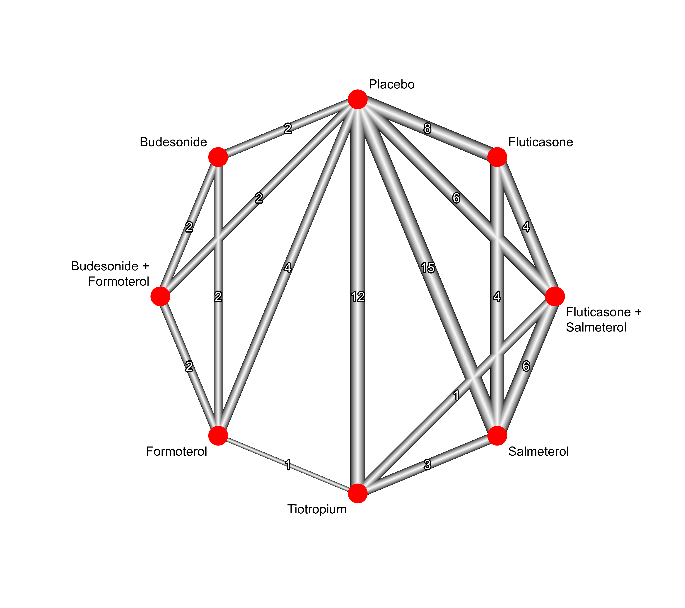

dat.baker2009.RdResults from 39 trials examining pharmacologic treatments for chronic obstructive pulmonary disease (COPD).
dat.baker2009The data frame contains the following columns:
| study | character | study label |
| year | numeric | year of publication |
| id | numeric | study ID |
| treatment | character | treatment |
| exac | numeric | number of individuals with one or more COPD exacerbations |
| total | numeric | number of individuals |
This data set comes from a systematic review of randomized controlled trials on pharmacologic treatments for chronic obstructive pulmonary disease (COPD) (Baker et al., 2009).
The primary outcome, occurrence of one or more episodes of COPD exacerbation, is binary (yes / no). For this outcome, five drug treatments (fluticasone, budesonide, salmeterol, formoterol, tiotropium) and two combinations (fluticasone + salmeterol, budesonide + formoterol) were compared to placebo. The authors considered the two combinations as separate treatments instead of evaluating the individual components.
Baker, W. L., Baker, E. L., & Coleman, C. I. (2009). Pharmacologic treatments for chronic obstructive pulmonary disease: A mixed-treatment comparison meta-analysis. Pharmacotherapy: The Journal of Human Pharmacology and Drug Therapy, 29(8), 891–905. https://doi.org/10.1592/phco.29.8.891
medicine, odds ratios, network meta-analysis, component network meta-analysis
### Show first 6 rows of the dataset
head(dat.baker2009)
#> study year id treatment exac total
#> 1 Llewellyn-Jones 1996 1996 1 Fluticasone 0 8
#> 2 Llewellyn-Jones 1996 1996 1 Placebo 3 8
#> 3 Boyd 1997 1997 2 Salmeterol 47 229
#> 4 Boyd 1997 1997 2 Placebo 59 227
#> 5 Paggiaro 1998 1998 3 Fluticasone 45 142
#> 6 Paggiaro 1998 1998 3 Placebo 51 139
# \dontrun{
### Load netmeta package
suppressPackageStartupMessages(library(netmeta))
### Print odds ratios and confidence limits with two digits
settings.meta(digits = 2)
### Transform data from long arm-based format to contrast-based
### format. Argument 'sm' has to be used for odds ratio as summary
### measure; by default the risk ratio is used in the metabin function
### called internally.
pw <- pairwise(treatment, exac, total, studlab = paste(study, year),
data = dat.baker2009, sm = "OR")
### Conduct random effects network meta-analysis (NMA)
### with placebo as reference
net <- netmeta(pw, fixed = FALSE, ref = "plac")
#> Warning: Comparisons with missing TE / seTE or zero seTE not considered in network meta-analysis.
#> Comparisons not considered in network meta-analysis:
#> studlab treat1 treat2 TE seTE
#> DalNegro 2003 2008 Fluticasone+Salmeterol Placebo NA NA
#> DalNegro 2003 2008 Fluticasone+Salmeterol Salmeterol NA NA
#> DalNegro 2003 2008 Salmeterol Placebo NA NA
#>
### Show network graph
netgraph(net, seq = "optimal", start = "prcomp",
labels = gsub("+", " +\n", trts, fixed = TRUE),
plastic = TRUE, thickness = "se.fixed", number = TRUE,
points = TRUE, cex.points = 5, col.points = "red",
offset = 0.025)

### Print and plot results for network meta-analysis
net
#> Number of studies: k = 38
#> Number of pairwise comparisons: m = 74
#> Number of observations: o = 28217
#> Number of treatments: n = 8
#> Number of designs: d = 13
#>
#> Random effects model
#>
#> Treatment estimate (sm = 'OR', comparison: other treatments vs 'Placebo'):
#> OR 95%-CI z p-value
#> Budesonide 0.80 [0.59; 1.10] -1.37 0.1702
#> Budesonide+Formoterol 0.67 [0.49; 0.90] -2.63 0.0086
#> Fluticasone 0.86 [0.75; 0.99] -2.05 0.0406
#> Fluticasone+Salmeterol 0.75 [0.66; 0.86] -4.17 < 0.0001
#> Formoterol 1.00 [0.80; 1.25] -0.00 1.0000
#> Placebo . . . .
#> Salmeterol 0.80 [0.72; 0.89] -4.06 < 0.0001
#> Tiotropium 0.69 [0.61; 0.77] -6.39 < 0.0001
#>
#> Quantifying heterogeneity / inconsistency:
#> tau^2 = 0.0111; tau = 0.1055; I^2 = 24.4% [0.0%; 47.7%]
#>
#> Tests of heterogeneity (within designs) and inconsistency (between designs):
#> Q d.f. p-value
#> Total 60.86 46 0.0700
#> Within designs 43.20 34 0.1340
#> Between designs 17.66 12 0.1264
forest(net)
### Conduct component network meta-analysis (CNMA)
cnet <- netcomb(net)
cnet
#> Number of studies: k = 38
#> Number of pairwise comparisons: m = 74
#> Number of treatments: n = 8
#> Number of active components: c = 6
#> Number of designs: d = 13
#>
#> Results for combinations (additive model, random effects model):
#> OR 95%-CI z p-value
#> Budesonide 0.74 [0.58; 0.95] -2.32 0.0202
#> Budesonide+Formoterol 0.72 [0.50; 1.03] -1.81 0.0699
#> Fluticasone 0.92 [0.80; 1.04] -1.31 0.1892
#> Fluticasone+Salmeterol 0.77 [0.61; 0.98] -2.13 0.0333
#> Formoterol 0.97 [0.77; 1.21] -0.29 0.7695
#> Placebo 1.04 [0.87; 1.23] 0.41 0.6804
#> Salmeterol 0.84 [0.72; 0.98] -2.25 0.0244
#> Tiotropium 0.71 [0.58; 0.87] -3.30 0.0010
#>
#> Results for components (random effects model):
#> OR 95%-CI z p-value
#> Budesonide 0.74 [0.58; 0.95] -2.32 0.0202
#> Fluticasone 0.92 [0.80; 1.04] -1.31 0.1892
#> Formoterol 0.97 [0.77; 1.21] -0.29 0.7695
#> Placebo 1.04 [0.87; 1.23] 0.41 0.6804
#> Salmeterol 0.84 [0.72; 0.98] -2.25 0.0244
#> Tiotropium 0.71 [0.58; 0.87] -3.30 0.0010
#>
#> Quantifying heterogeneity / inconsistency:
#> tau^2 = 0.0114; tau = 0.1068; I^2 = 24.9% [0.0%; 47.8%]
#>
#> Heterogeneity statistics:
#> Q df p-value
#> Additive model 62.62 47 0.0632
#> Standard model 60.86 46 0.0700
#> Difference 1.76 1 0.1841
### Compare results of NMA and additive CNMA
nb <- netbind(net, cnet, name = c("Standard NMA", "Additive CNMA"))
forest(nb)
# }